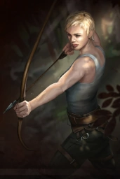

- Duelist
Quick to anger, even quicker to strike, the Duelist is a man of haughty character and deadly skill. He is brash and confident. Some might call him arrogant, but he backs up his taunts with a keen blade and a callous heart. The Duelist is a thrill-seeker, always sniffing out conflict and picking fights. This habit has gotten him in trouble countless times, but he's always survived with skill and guile. The Duelist is a master of close-quarters combat, dealing lethal damage with a wide array of weapons while escaping most harm. Women swoon at the sight of him, men tremble at the thought of him, and few that face him in battle live to tell the tale.
- Marauder
His visage marked equally by tribal tattoos and the scars of battle, the imposing Marauder is a survivor of many bloody battles. The clanging, scraping and screaming of war is music to his ears, and he delights in crushing the skulls of his foes underfoot. He is a monster of a man, towering above his cohorts and quick to show his strength and ferocity. A master armsman, the Marauder is versed in many weapons, but he generally prefers the heft of a heavy two-handed axe or mace. He plunges into battle with a cry of delight, and woe be to anyone foolish enough to get in his way.
- Ranger

Padding silently through the dark forest, the lithe and stealthy ranger is at home. Long eschewing the company of men, she has turned her affections to the deep and wild wilderness, and she travels alone. Her time out away from the comfortable trappings of civilization has hardened her body and her spirit. It has also granted her the time and necessity to master a wide range of weapons. Despite her prowess on the battlefield, the Ranger is most comfortable hidden from view, felling her opponents from a distance with her mighty long bow. When cornered though, she fights as fiercely as a tigress with sword, dagger, mace, or whatever is at hand.
- Shadow
A flicker of movement, a knife from the dark. By the time you've seen him, it's already too late. The Shadow kills silently, without hesitation, without mercy. He is versed in many weapons, but prefers ambush and subterfuge. Hundreds have met their deaths shrieking in his traps. The Shadow has come from the Guild of the Night in Oriath for one purpose: to inflict pain and suffering on anyone who's wronged him. Exile is merely an inconvenience.
- Templar
He is wizened and gray, but don't let that fool you. His humble clothing hides a powerful, sinuous physique, honed by many years of hard labor and asceticism. Age has granted the Templar an older man's wisdom and tact, qualities he combines with surprisingly well-preserved physical strength. The mighty Templar bests his foes with weapons of steel, and a shield of righteousness. His great bravery and purpose drive him headlong into the fray, disdaining risk with dogged zeal. Some might look upon the Templar's bravado as foolhardiness, but they simply do not know what it means to be a man of faith. On Wraeclast, where faith and hope are dim, he is a shining, towering beacon.
- Witch
They laughed at her. They pointed fingers, pulled their children away and whispered in the streets. They burned her home and drove her from the village. She got even. Flame, shadow, disease and frost. These are the tools of the mighty witch and she wields them with a reckless power she can barely control. Though she may look frail and delicate, do not underestimate her. Many have, and they are counted among the burned and withered corpses in her wake.
- Scion
It was me, who was chosen to control the massive mysterious power from darkness. I have been chained up long. But the physical cage will no longer confine me. My talent will break though it and flicker, brilliantly.